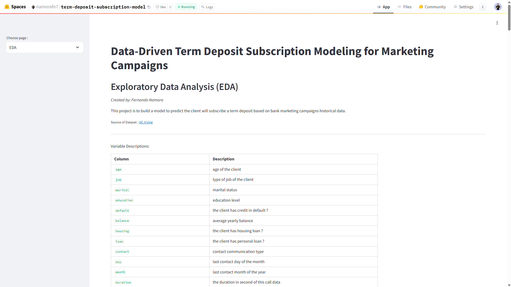
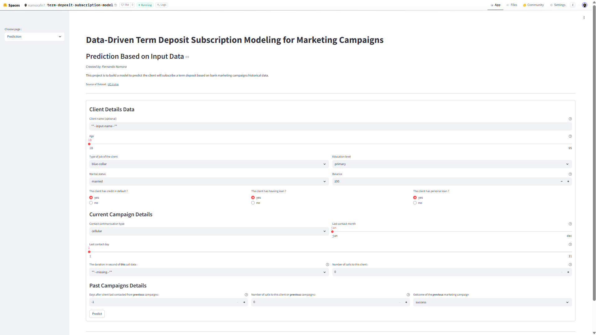
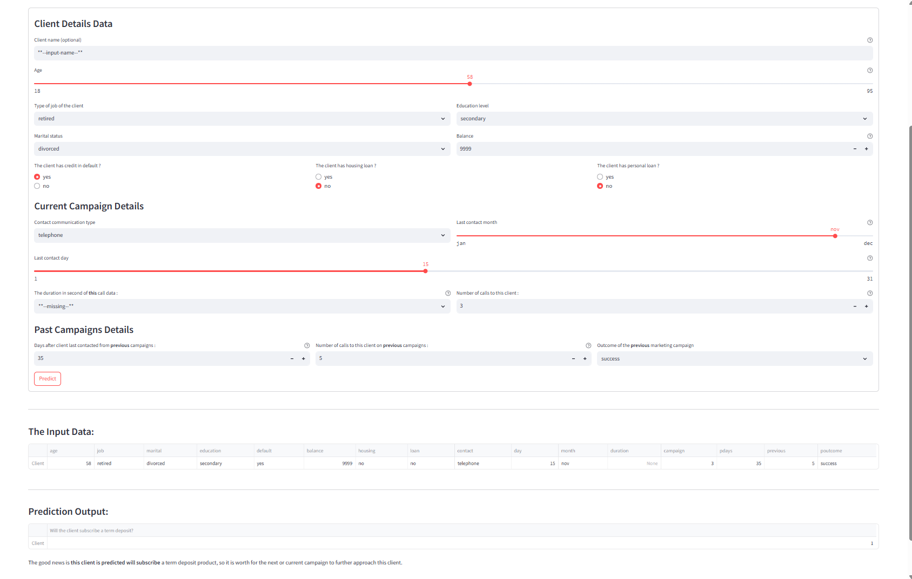

Term Deposit Subscription Model
Predictive Model for Marketing Campaign Optimization
Predictive Model for Marketing Campaign Optimization
Marketing campaigns for term deposit products often target a broad audience, leading to inefficient resource usage and low conversion rates.
This project builds a supervised machine learning model to predict which customers are more likely to subscribe, enabling more targeted and efficient marketing strategies.
The workflow includes exploratory data analysis, feature engineering, model comparison, and deployment as an interactive web application.
The final model is deployed using Streamlit on Hugging Face Spaces, allowing real-time predictions based on user input.

Exploratory Data Analysis page showing patterns in customer behavior.

Interactive interface for inputting customer data.

Example prediction result generated from user input.